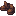

酿酒师靴子
Winemaker Boots
英文名: Winemaker Boots命名空间 ID:
vinery:winemaker_boots类型: 物品所属模组: [Let's Do] Vinery资料检索: 🔎 在 MC百科 搜索「酿酒师靴子」合成获得 (1)


原始 JSON
{
"type": "minecraft:crafting_shaped",
"group": "winemaker_set",
"pattern": [
"S S",
"# #"
],
"key": {
"#": {
"item": "minecraft:brown_wool"
},
"S": {
"item": "minecraft:rabbit_hide"
}
},
"result": {
"id": "vinery:winemaker_boots"
}
}